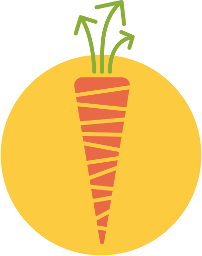

Karrot
from saving food to saving society?
Nick Sellen and Bruno Chies
Try it out!
- go to karrot.world and sign up
- search groups for "festival"
- join the "Foodsharing Festival Playground" group
ask in the chat if you get lost/stuck
So, what came out of all of that?
Like foodsharing but...
- independent groups
- no admin roles
- more than saving food
Where are we?
~25 communities
~7000 people signed up
each month
~3000 activities done
~1000 people use the site
~600 people do an activity
Also...
😍 we are still here!
🤝 regular team meetings
👩🏼🎓 connections with academia
💗 still growing!
Where we're heading
🚲 beyond food
🔨 customisation
🙌 self-organisation
Challenges
🤹 skills and time in a small team
🦥 diversity of needs
💲economic model
🥱 yet another platform
🔧 not as polished as startup
Questions
🥕 Are you involved in groups that could use Karrot?
💃 How do you get less active people more involved?
🧑💼 Do you need your admin structures?